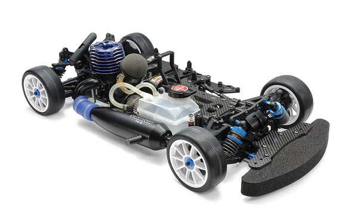

タミヤ TG10-Mk.2 FZ レーシングシャーシキット 2022

引用元画像：タミヤ公式サイト
📋 基本情報
| メーカー | タミヤ（Tamiya） |
|---|---|
| 機種名 | TG10-Mk.2 FZ レーシングシャーシキット 2022 |
| 型番 | 44055（シャーシキット） |
| 発売時期 | 2022年11月19日 |
| 生産状況 | 現行販売中 |
| カテゴリー | ラジコンカー（1/10スケール エンジンRCカー） |
| サブカテゴリー | グローエンジンカー（オンロード・ツーリング・最新レース仕様） |
📏 シャーシスペック
| 全長 | 373mm |
|---|---|
| 全幅 | 196～200mm（可変） |
| ホイールベース | 257mm |
| トレッド | 前後共172～176mm（可変） |
| タイヤ | ミディアムナローサイズ（24mm幅）ツーリングカー用タイヤ＆ホイール（別売） |
| フレーム | 3mm厚アルミ製ロワ（ナロータイプ）＋2mm厚カーボン製アッパー（ロープロファイルサーボ仕様）のダブルデッキ |
⚙️ 駆動系
| 駆動方式 | シャフトドライブ4WD |
|---|---|
| デフギヤ | フロント/リヤとも4ベベル |
| ドライブシャフト | ユニバーサルタイプ（前後＋プロペラシャフト） |
| ギヤ比 | 7.02:1（1速） / 5.42:1（2速） |
| トランスミッション | 2スピード |
| ベアリング | フルベアリング仕様 |
| エンジン | タミヤ FS-12FZ（2.1cc、軽量アルミフライホイール） |
| マフラー | TM-12レースチューンマフラー＆マニホールドセット |
| ブレーキ | スチール製ブレーキ＆ブレーキカム |
| 燃料タンク | 75cc |
🔧 サスペンション
| 形式 | 4輪ダブルウィッシュボーン（アルミサスマウント＋樹脂製ブッシュ） |
|---|---|
| ダンパー | ショートサイズ・ビッグボアオイルダンパー |
| ダンパーステー | 3mm厚カーボン |
| ステアリング | 3分割タイロッド |
💡 特徴
TG10-Mk.2FZシャーシを大幅にリファインした「2022」モデル
- TG10-Mk.2 FZをベースに走行性能をさらに磨いた最新2022年モデル
- ナロータイプの3mm厚アルミ製ロワデッキでコーナリング性能を向上
- ロープロファイル・ステアリングサーボ仕様の2mm厚カーボン製アッパーデッキ
- ステアリングサーボの搭載位置変更でメンテナンス性が大幅向上
重心低下とサスペンション性能の向上
- ショートサイズのビッグボアダンパーで低重心化を実現
- 3mm厚カーボンダンパーステーで最適な取り付け位置を確保
- ロール時の路面干渉を軽減し、サスペンションをしっかり機能させる
- アルミサスマウントと樹脂製ブッシュで繊細なセッティングが可能
高剛性と軽量化の両立
- カーボンバンパーサポートでボディマウント剛性を向上
- ユニバーサルタイプのドライブシャフトとプロペラシャフトでパワーロスを軽減
- 軽量アルミフライホイールでシャープな加速
レース即戦力の充実装備
- TM-12レースチューンマフラー標準装備で即レース参戦可能
- 2スピードトランスミッション標準装備
- 既存のFZシャーシユーザーにもおすすめできる充実の内容
🔧 ぽすとそに工房での修理実績
修理難易度
★★★★★（非常に難しい、最新レース仕様のため専門知識と経験が必須）
よくある故障・注意点
- 2スピードトランスミッションの調整が非常に繊細
- ビッグボアダンパーのメンテナンスに専門知識が必要
- カーボンパーツの取り扱いに注意が必要（過度な締め付けは破損の原因）
- ロープロファイルサーボの選定が重要
- エンジンの高度なセッティング能力が求められる
- ユニバーサルシャフトのメンテナンス
修理のポイント
- ビッグボアダンパーのオイル交換とシール類の点検（専用工具推奨）
- カーボンパーツの締め付けトルク管理（トルクレンチ使用推奨）
- ユニバーサルシャフトのグリスアップと摩耗チェック
- 2スピードトランスミッションの微調整技術
- エンジンの最適セッティング（TM-12マフラー専用）
- アルミサスマウントの状態確認
その他の特徴
- 2022年現在のタミヤエンジンカー最新技術の集大成
- レース参戦を前提とした上級者向けモデル
- 細かなセッティングで極限の性能を引き出せる
- 修理には高度なエンジンカーの専門知識が必須
- 現行販売中のため、パーツ入手性は良好